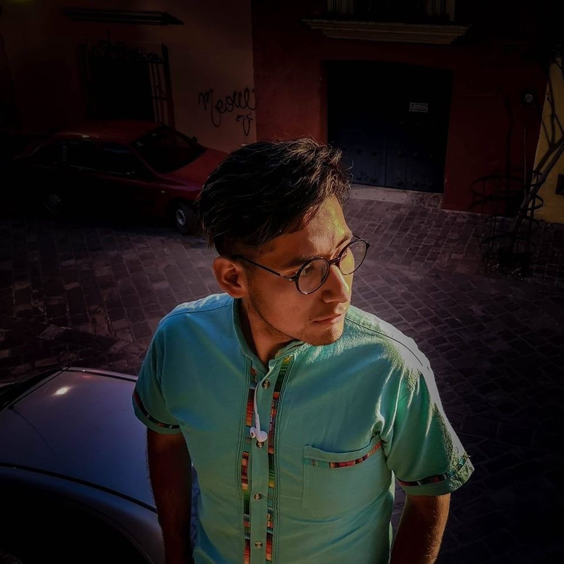

<ion-header>
  <ion-toolbar>
    <ion-buttons slot="end">
      <ion-button routerLink="/home" color="danger">Salir</ion-button>
    </ion-buttons>
    <ion-title color="primary">Desarrolladores</ion-title>
  </ion-toolbar>
</ion-header>

<ion-content>

  <ion-list>
    <ion-item-sliding>
      <ion-item routerLink="/desarrollador">
        <ion-avatar slot="start">
          
        </ion-avatar>
        <ion-label>
          <h2 style="color: dodgerblue; font-size: 1.3em;">Jose Luis Flores Garcia </h2>
          Desarrollador Junior
        </ion-label>
      </ion-item>
      <ion-item-options side="end">
        <ion-item-option (click)="unread(item)">Unread</ion-item-option>
      </ion-item-options>
    </ion-item-sliding>
  
    <ion-item-sliding>
      <ion-item>
        <ion-avatar slot="start">
          
        </ion-avatar>
        <ion-label>
          <h2 style="color: dodgerblue; font-size: 1.3em;">Javier Alberto Leon Orosco</h2>
          Desarrollador Junior
        </ion-label>
      </ion-item>
      <ion-item-options side="end">
        <ion-item-option (click)="unread(item)">Unread</ion-item-option>
      </ion-item-options>
    </ion-item-sliding>

    <ion-item-sliding>
      <ion-item>
        <ion-avatar slot="start">
          
        </ion-avatar>
        <ion-label>
          <h2 style="color: dodgerblue; font-size: 1.3em;">Juan Daniel Cruz Aguilar </h2>
          Desarrollador Junior
        </ion-label>
      </ion-item>
      <ion-item-options side="end">
        <ion-item-option (click)="unread(item)">Unread</ion-item-option>
      </ion-item-options>
    </ion-item-sliding>
  </ion-list>

</ion-content>

<ion-footer>
  <ion-toolbar>
    <ion-tabs>
      <ion-tab-bar slot="bottom">
        <ion-tab-button tab="Inicio" routerLink="/inicio">
          <ion-icon name="home"></ion-icon>
          <ion-label>Pagina principal</ion-label>
        </ion-tab-button>
    
        <ion-tab-button tab="Desarrolladores">
          <ion-icon name="person-sharp" color="primary"></ion-icon>
          <ion-label color="primary">Desarrolladores</ion-label>
        </ion-tab-button>
    
        <ion-tab-button tab="map" routerLink="/posts">
          <ion-icon name="pencil-outline"></ion-icon>
          <ion-label>Posts</ion-label>
        </ion-tab-button>
      </ion-tab-bar>
    </ion-tabs>
  </ion-toolbar>
</ion-footer>

